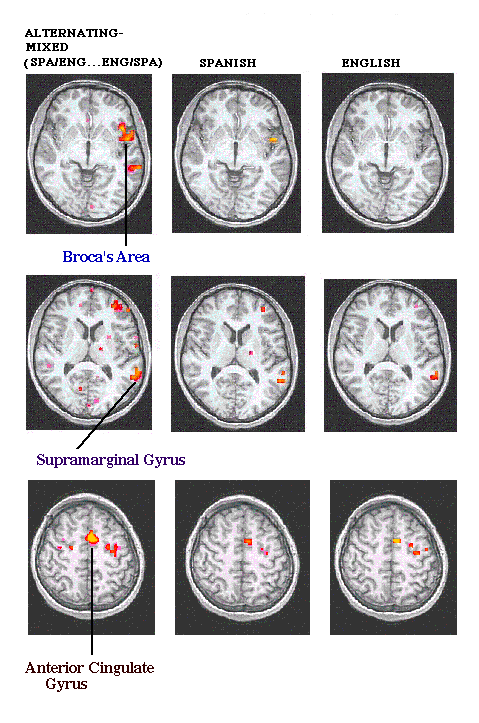

- images -
|
. The new CD-ROM will be released Sunday, October 18 in Japan. As part of promoting this concept, PFU delivered its ultrahigh-definition Kokuho Butsuzo (National Treasure Buddhist Images) image browsing system last March. Each image stored in this system is 630MB with a resolution of 16,800 x 13,200 pixels. PFU followed up the browsing system by announcing and releasing the Kokuho Butsuzo series CD-ROM titles last May, which has been well-received for its high quality. |
. StartSpot Network BookSpot CinemaSpot EmploymentSpot GenealogySpot GiveSpot GourmetSpot GovSpot HeadlineSpot HomeworkSpot LibrarySpot MuseumSpot PeopleSpot ShoppingSpot TripSpot The Web is not just a place for words. You can also find great images, from copyright-friendly clip art to breathtaking photography. Users can browse through exhibit galleries or use the image search engine to find specific images that be printed, sent to others as an e-card or purchased as a photographic print. NASA's Space Science Pictures of Space Features truly amazing photographs of planet Earth and beyond.
|  |
. The Daily Motivator WEBSITE OWNERS -- put an automatically updated daily message on your site, for FREE. Get The Daily Motivator by E-MAIL Daily Motivator FAQ NEW - Audiocassette program from The Daily Motivator Subscriber log in Today's Daily Motivator Browse through more than 1,000 previous motivators Special offer for webmasters Get The Daily Motivator in a book Inspiring Images Give a gift subscription German language edition Reprint permission Links to Positive Resources Inspirational Images Take a break from your busy day, and reflect for a few moments. We've combined some beautiful, inspiring photographs with quotes from The Daily Motivator. Sorry, these are not available in printed form -- they're here for your enjoyment on the Web. |
|
, at the Best Clips Web Site Sample self-scoring vocabulary quiz Back to the contents at the top of this page. . You may go to those Latin-Greek words that include images with a simple click on the link of your choice as shown below. Please let me know if the images appear properly (or improperly) by using one of the e-mail links available on this page. Although emphasis is placed on words that are derived from Latin and Greek sources, many of the words presented in these illustrated studies are not from those classical languages; however, they are included because of their special etymological interests. |
A site I really like: http://www.cherokeeimages.com